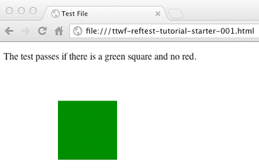
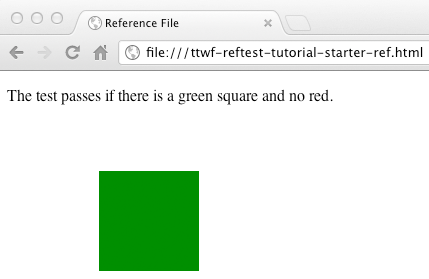
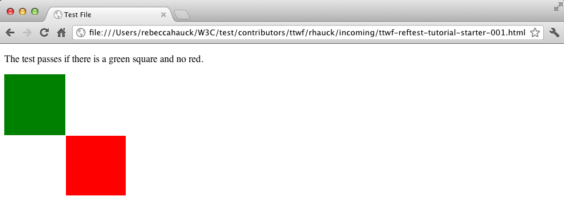
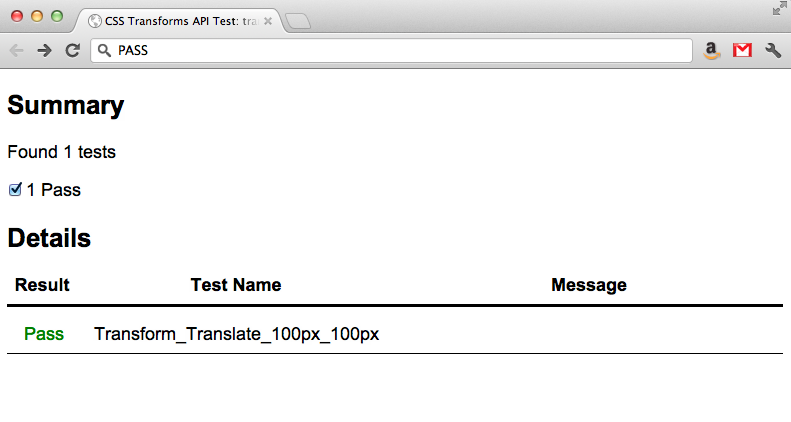

W3C Test Writing Tutorials
Setup
Complete all steps before proceeding
- Step 1: Create a CSSWG Test Manager Account
https://test.csswg.org/shepherd/register/- Select the check box next to "Request Repository Write Access"
- Step 2: Install Mercurial
http://wiki.csswg.org/tools/hg/install - Step 3: Setup Mercurial Preferences
http://wiki.csswg.org/tools/hg#setting-up-mercurial-preferences
Press down for additional steps
- Step 4: Clone the CSSWG Test Suite Repository
http://wiki.csswg.org/tools/hg#initial-clone-of-the-central-repository - Step 5: Clone the Resources directory
http://wiki.csswg.org/tools/hg#initial-clone-of-the-central-repository
Reftest Overview
- Two files: Test file + Reference file
- Test file uses the feature you're testing
- Reference file is an exact visual match without using the feature you're testing
- Self-describing (works both manually and with automation)
- Cross-browser & cross-platform
Directory structure
- CSSWG Test Repository
- contributors
- ttwf
- your_csswg_id
- incoming
- submitted

Sample Test Case
Basic test for the transform property described in the CSS3 Transforms spec using the translate() function
Spec Links:
http://www.w3.org/TR/css3-transforms/#transform-property
http://www.w3.org/TR/css3-transforms/#two-d-transform-functions

Step 1 - OSX
Press down-arrow for Windows instructions
Update your local CSSWG test repository
Complete this step unless you just cloned the repository during setup
From a terminal window, type the following:
$ cd [path to repo]/test
$ hg pull -u
$ ls -lR contributors/ttwf/samples
Note: These files can also be downloaded from here:
ttwf-reftest-tutorial-starter.zip
Step 1 - Windows
Press up-arrow for OSX instructions
Update your local CSSWG test repository
Complete this step unless you just cloned the repository during setup
From a command prompt, type the following:
> cd [path to repo]\test
> hg pull -u
> dir contributors\ttwf\samples
Note: These files can also be downloaded from here:
ttwf-reftest-tutorial-starter.zip
Step 2 - OSX
Press down-arrow for Windows instructions
Create a directory for your new test
$ cd [path to repo]/test/contributors/ttwf/
$ mkdir -p yourName/incoming
$ cd yourName/incoming
Step 2 - Windows
Press up-arrow for OSX instructions
Create a directory for your new test
> cd [path to repo]\test\contributors\ttwf
> mkdir yourName\incoming
> cd yourName\incoming
Step 3 - OSX
Press down-arrow for Windows instructions
Copy the starter files to your incoming directory
From your incoming directory created in previous step
$ cp -R ../../samples/ttwf-reftest-tutorial-starter/* .
Step 3 - Windows
Press up-arrow for OSX instructions
Copy the starter files to your incoming directory
From your incoming directory created in previous step
> xcopy /e ..\..\samples\ttwf-reftest-tutorial-starter .
Step 4
Open the ttwf-reftest-tutorial-starter-001.html file in a editor
Step 5.1
Add the test metadata
Title & Author
Note: Each metadata element is described in detail on the CSSWG Wiki
http://wiki.csswg.org/test/format#template-details
Step 5.2
Add the test metadata
Path to reference file
Note: Each metadata element is described in detail on the CSSWG Wiki
http://wiki.csswg.org/test/format#template-details
Step 5.3
Add the test metadata
Spec links
Note: Each metadata element is described in detail on the CSSWG Wiki
http://wiki.csswg.org/test/format#template-details
Step 6
Add the transform property to the test element
Step 7
Create an element that is visible only upon failure
Step 8.1
Add green fill color to denote passing condition
Step 8.2
Add the red fill color to denote failing condition
Step 9
Add a statement to the test page to make this a self-describing test
Step 10
Open the reference/ttwf-reftest-tutorial-starter-ref.html file in an editor
Step 11
Add the reference metadata
Title & Author
Step 12
Position and fill the reference element so it matches the test file exactly in a passing condition
Step 13
Add the self-describing statement here, too
Step 14
Examine your test and reference files in the browser and confirm they are identical
 Failing test example

Vendor prefixes
- You may need to add a vendor prefix to the CSS property you're developing tests
- If the prefix is necessary, your test will appear to fail without it
- However, do not include vendor prefixes when pushing tests to the W3C
Press the down-arrow for a vendor-prefixed version of this tutorial
Press the down-arrow for an alternative to adding vendor prefixes manually
We recommend a script to use during test development:
http://leaverou.github.com/prefixfree
The prefixfree.jsapi.js extension can be used for unprefixed JS APIs tests:
https://github.com/LeaVerou/prefixfree/tree/gh-pages/plugins
During test development, include the scripts is your tests like this:
Step 15 - OSX
Press the down-arrow for Windows instructions
Add your new test & reference file to the repository
$ cd [path to repo]/test/contributors/ttwf/yourName/incoming
$ hg add ttwf-reftest-tutorial-001.html
$ hg add reftest
$ hg commit -m "TTWF reftest tutorial"
$ hg push
Note: If you receive the following error:
abort: push creates new remote head ...
Your local repository is out of sync with the test repository
Do the following to resolve the issue:
Only complete these steps if you received the error message above
$ hg pull
$ hg merge
$ hg commit -m "Merge"
$ hg push
Step 15 - Windows
Press the up-arrow for OSX instructions
Add your new test & reference file to the repository
> cd [path to repo]\test\contributors\ttwf\yourName\incoming
> hg add ttwf-reftest-tutorial-001.html
> hg add reftest
> hg commit -m "TTWF reftest tutorial"
> hg push
Note: If you receive the following error:
abort: push creates new remote head ...
Your local repository is out of sync with the test repository
Do the following to resolve the issue:
Only complete these steps if you received the error message above
> hg pull
> hg merge
> hg commit -m "Merge"
> hg push
Step 16
Ask the spec expert to review your test
Step 17 - OSX
Press down-arrow for Windows instructions
Incorporate feedback & move test to the submitted folder
$ cd [path to repo]/test/contributors/ttwf/yourName
$ hg pull -u
$ hg merge
$ hg commit -m "merging"
$ hg mv incoming/ttwf-reftest-tutorial-001.html submitted/ttwf-reftest-tutorial-001.html
$ hg mv incoming/reference/ttwf-reftest-tutorial-ref.html submitted/reference/ttwf-reftest-tutorial-ref.html
$ hg commit -m "moved the TTWF reftest tutorial to the submitted folder"
$ hg push
Step 17 - Windows
Press down-arrow for OSX instructions
Incorporate feedback & move test to the submitted folder
> cd [path to repo]\test\contributors\ttwf\yourName
> hg pull -u
> hg merge
> hg commit -m "merging"
> hg mv incoming\ttwf-reftest-tutorial-001.html submitted\ttwf-reftest-tutorial-001.html
> hg mv incoming\reference/ttwf-reftest-tutorial-ref.html submitted\reference\ttwf-reftest-tutorial-ref.html
> hg commit -m "moved the TTWF reftest tutorial to the submitted folder"
> hg push
W3C JavaScript Test Tutorial
JavaScript Test Overview
- JavaScript tests programmatically verify functionality
- JavaScript tests have some advantages over Reftests
- Robust
- Flexible
- Performant
- Powerful
- Reftests have some advantages over JavaScript tests
- Verify complete rendering
- Easy to understand
- Works for clients that don't support JavaScript
- Avoid introducing additional technologies (JS)
JavaScript Test Overview (cont'd)
- JavaScript can be used in conjunction with Reftests
- Test can have both a reference file and a JavaScript section
- Reftest portion supports suites without script engines
- JavaScript section adds automation
- Self-describing Reftests are the preferred test format
- JavaScript tests should be used in the following scenarios
- Testing a JavaScript API or behavior (ex: CSSOM spec)
- Adding automation to Reftests
- W3C provides a framework (testharness.js) to simplify and standardize JS test creation
testharness
testharness.js and testharnessreport.js
<script src="/resources/testharness.js"></script>
<script src="/resources/testharnessreport.js"></script>
- JavaScript API for making common test assertions
- Documented in the comment section of testharness.js
- Should be used by all JavaScript tests
Press down for more
- Path must be to /resources directory at root level
- Locally, resources directory can be located anywhere
- Prior to pushing to CSSWG Test repository, the path must match example above
- Element with
id="log"should exist in test file- Test results table will be added to this element, if it exists
The test function
test(test_function, name, properties)
- Used for synchronous tests
async_test()is also defined by testharness.js for asychronous testing
- Documented and implemented in testharness.js
- Used to define an individual test case in a file
- Common for a file to have multiple calls to
test()
- Common for a file to have multiple calls to
- testharness.js will display PASS/FAIL for each call to
test()
Press down for more
test() Argument 1: test_function
test(test_function, name, properties)
test_functionmust be an object, not a function calltest_functionshould be testharness assert method- If no built-in assert methods provide the needed functionality, take a look in testharness.js for how to write your own
- Result from the assertion will determine PASS/FAIL
- Usage example:
test(function() { assert_true(true) }, name, properties)
test() Argument 2: Name
test(test_function, name, properties)
nameis a string that identifies the testnameshould be short, unique, and must not changenamewill be displayed in the test results table- Usage example:
test(function() { assert_true(true) }, "test_name", properties)
test() Argument 3: Properties
test(test_function, name, properties)
propertiesis an object that overrides defaultspropertiesis an optional argument- Recognized properties include
timeoutand metadata - Usage example:
test(function() { assert_true(true) }, "test_name",
{timeout:1000,
help: 'http://www.w3.org/TR/spec#section',
author: ['Bill Gates <bgates@msn.com>', 'Steve Jobs http://apple.com/sjobs'],
assert: 'This should always be true.'})
For detail on how to define per-test metadata, see the CSSWG Script Test Wiki Page
Assert methods
- testharness.js provides a number of assert methods
- Full list is provided in the comment section of testharness.js
- Typically used in the
test_functionfortest()
- All assert methods contain an optional
descriptionargument that is only output if the assertion fails- Used to provide additional debug information
- All asserts must be located in a call to
test()- asserts outside won't be detected correctly by the harness and may cause a file to stop testing
Press down for more
Assert Example
assert_equals(actual, expected, description)
actual: The actual value from the functionality being testedexpected: The expected valuedescription(optional): Output only if the assertion fails- Usage example:
assert_equals(getActualData("myElement"), 100, "Expected value for myElement is 100")
Sample Test Case
Basic test for the transform property described in the CSS3 Transforms spec using the translate() function
Similar to Reftest example, this time testing API instead of rendering
Spec Links:
http://www.w3.org/TR/css3-transforms/#transform-property
http://www.w3.org/TR/css3-transforms/#two-d-transform-functions
Press down for more
Step 1
A JavaScript starter file was copied during Setup
Open the ttwf-js-tutorial-001.html file in an editor
<!DOCTYPE html>
<html>
<head>
<title>CSS Transforms API Test: transform translate</title>
<link rel="author" title="Your Name" href="mailto:youremail@address.com">
<link rel="help" href="http://www.w3.org/TR/css3-transforms/#transform-property">
<link rel="help" href="http://www.w3.org/TR/css3-transforms/#two-d-transform-functions">
<meta name="assert" content="The transform should be translate(100px,100px)">
</head>
<body>
</body>
</html>
Step 2
Update Metadata
- Update the
authormetadata - Add a line for the
flagsmetadataflagsdocument a test's prerequisites- Full list of
flagsis available on the CSSWG Wiki Test Format page
- Example:
<title>CSS Transforms API Test: transform translate</title>
<link rel="author" title="Jim Tester" href="mailto:jimmyt@yahoo.com">
<link rel="help" href="http://www.w3.org/TR/css3-transforms/#transform-property">
<link rel="help" href="http://www.w3.org/TR/css3-transforms/#two-d-transform-functions">
<meta name="flags" content="dom">
<meta name="assert" content="The transform should be translate(100px,100px)">
Step 3
Import the W3C JavaScript Test Harness files
Add the following lines to the starter file above the style block
...
<script src="/resources/testharness.js"></script>
<script src="/resources/testharnessreport.js">></script>
...
Note: During development, the path to the resources directory should match the directory's location on the local machine
The path to these scripts must point to the /resources directory before pushing to the CSSWG Test repository
Checkpoint
The head block of your starter file should appear as follows
With your actual name and email address for the author metadata
<!DOCTYPE html>
<html>
<head>
<title>CSS Transforms API Test: transform translate</title>
<link rel="author" title="Your Name" href="mailto:youremail@address.com">
<link rel="help" href="http://www.w3.org/TR/css3-transforms/#transform-property">
<link rel="help" href="http://www.w3.org/TR/css3-transforms/#two-d-transform-functions">
<meta name="flags" content="dom">
<meta name="assert" content="The transform should be translate(100px,100px)">
<script src="/resources/testharness.js"></script>
<script src="/resources/testharnessreport.js"></script>
</head>
...
Step 4
Add a div to be used as the test element to the <body>
...
<body>
<div id="myDiv"></div>
<body>
...
The transform will be applied to this element
Step 5
Add a <div> with id="log" for test results
...
<body>
<div id="myDiv"></div>
<div id="log"></div>
<body>
...
testharness.js will add an HTML table that contains test results to this element
Step 6
Create a <script> block that will contain the JavaScript
...
<body>
<div id="myDiv"></div>
<div id="log"></div>
<script>
</script>
<body>
...
Checkpoint
Starter file should now appear as follows
<!DOCTYPE html>
<html>
<head>
<title>CSS Transforms API Test: transform translate</title>
<link rel="author" title="Your Name" href="mailto:youremail@address.com">
<link rel="help" href="http://www.w3.org/TR/css3-transforms/#transform-property">
<link rel="help" href="http://www.w3.org/TR/css3-transforms/#two-d-transform-functions">
<meta name="flags" content="dom">
<meta name="assert" content="The transform should be translate(100px,100px)">
<script src="/resources/testharness.js"></script>
<script src="/resources/testharnessreport.js"></script>
</head>
<body>
<div id="myDiv"></div>
<div id="log"></div>
<script>
</script>
</body>
</html>
Step 7
Set the transform on the test element in JavaScript
...
<body>
<div id="myDiv"></div>
<div id="log"></div>
<script>
// Set the transform
document.getElementById("myDiv").style.transform = "translate(100px,100px)";
</script>
</body>
</html>
Step 8
Add a call to test() to your script block
Use assert_equals inside test_function
...
<body>
<div id="myDiv"></div>
<div id="log"></div>
<script>
// Set the transform
document.getElementById("myDiv").style.transform = "translate(100px,100px)";
// Verify that the transform was set as expected
test(function() {assert_equals( //test arg1: test_function
document.getElementById("myDiv").style.getPropertyCSSValue("transform").cssText, //assert_equals arg 1: actual
"translate(100px,100px)", //assert_equals arg 2: expected
"transform should be translate(100px,100px)")}, //assert_equals arg 3: description
"Transform_Translate_100px_100px"); //test arg2: name
</script>
</body>
</html>
Comments on test arguments added for clarity, can be omitted
Completed File
<!DOCTYPE html>
<html>
<head>
<title>CSS Transforms API Test: transform translate</title>
<link rel="author" title="Your Name" href="mailto:youremail@address.com">
<link rel="help" href="http://www.w3.org/TR/css3-transforms/#transform-property">
<link rel="help" href="http://www.w3.org/TR/css3-transforms/#two-d-transform-functions">
<meta name="flags" content="dom">
<meta name="assert" content="The transform should be translate(100px,100px)">
<script src="/resources/testharness.js"></script>
<script src="/resources/testharnessreport.js"></script>
</head>
<body>
<div id="myDiv"></div>
<div id="log"></div>
<script>
document.getElementById("myDiv").style.transform = "translate(100px,100px)";
test(function() {assert_equals(
document.getElementById("myDiv").style.getPropertyCSSValue("transform").cssText,
"translate(100px,100px)", "transform should be translate(100px,100px)")},
"Transform_Translate_100px_100px");
</script>
</body>
</html>
Passing test example 
Failing test example

Step 10 - OSX
Press the down-arrow for Windows instructions
Add your new test file to the repository
$ cd [path to repo]/test/contributors/ttwf/yourName/incoming
$ hg add ttwf-js-tutorial-001.html
$ hg commit -m "TTWF JavaScript tutorial"
$ hg push
If you receive the error:
abort: push creates new remote head ...
Your local repository is out of sync with the test repository. To resolve:
$ hg pull
$ hg merge
$ hg commit -m "Merge"
$ hg push
Step 10 - Windows
Press the up-arrow for OSX instructions
Add your new test file to the repository
> cd [path to repo]\test\contributors\ttwf\yourName\incoming
> hg add ttwf-js-tutorial-001.html
> hg commit -m "TTWF JavaScript tutorial"
> hg push
If you receive the error:
abort: push creates new remote head ...
Your local repository is out of sync with the test repository. To resolve:
> hg pull
> hg merge
> hg commit -m "Merge"
> hg push
Step 11
Ask the spec expert to review your test
Step 12 - OSX
Press down-arrow for Windows instructions
Incorporate feedback & move test to the submitted folder
$ cd [path to repo]/test/contributors/ttwf/yourName
$ hg mv incoming/ttwf-js-tutorial-001.html submitted/ttwf-js-tutorial-001.html
$ hg commit -m "moved the TTWF JavaScript tutorial to the submitted folder"
$ hg push
Step 12 - Windows
Press down-arrow for OSX instructions
Incorporate feedback & move test to the submitted folder
> cd [path to repo]\test\contributors\ttwf\yourName
> hg mv incoming\ttwf-js-tutorial-001.html submitted\ttwf-js-tutorial-001.html
> hg commit -m "moved the TTWF JavaScript tutorial to the submitted folder"
> hg push
Congratulations!
You have completed both a W3C Reftest and JavaScript Test
Reference Slides
Mercurial Command Reference
- Basic Commands:
- hg pull (gets the latest changes from the CSSWG Test repo)
- To update after pull, use: hg pull -u (alleviates need to do hg update)
- hg update (applies the latest changes pulled to your local repo)
- hg status (displays list of locally changed files)
- hg add (stages a new or modified local file for commit)
- hg remove (stages the removal of a local file for commit)
- hg merge (merges local changes with updates pulled from CSSWG Test repo)
- hg commit (commits local changes to local repository)
- To include commit message, use: hg commit -m "Commit message here"
- hg push (pushes local changes to the CSSWG Test repository)
Press down for more
- User wants to update their local repo:
- hg pull -u (pulls and applies latest changes from CSSWG repo to local repo)
- User wants to push local changes:
- hg status (check which files are stages for commit)
- hg add fileName (stages file for commit, repeat for each file)
- hg status (confirm all files are stages for commit)
- hg commit -m "Commit message here" (Commit to local repo)
- hg push (pushes locally committed changes to CSSWG Test repo)
Press down for more
- User gets error message during push
abort: push creates new remote head ...- hg pull (gets newest changes from CSSWG Test repo)
- hg merge (merges newest changes from CSSWG Test repo with local changes)
- hg commit -m "Merge" (commits the merge to local repo)
- hg push (pushes changes to CSSWG Test repo)